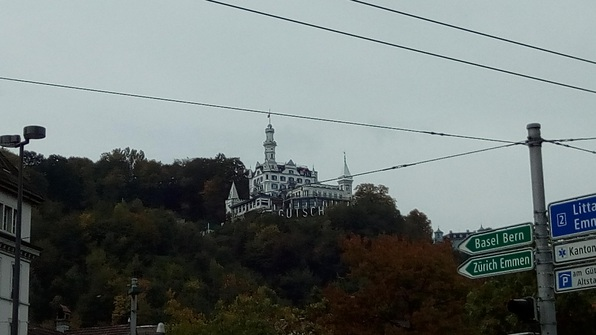

Today me and a bunch of buddies from Culmann took a trip to Lucerne! It was an ordinary trip with no especial highlights, but it was a really good time.
Rent Run
Well, before that actually, Daniel and I made a mad dash for the Post to pay our rent on time. I had kinda put rent out of my mind, assuming that payment wouldn’t be difficult, but the online payment method wasn’t obvious, and I had to pay before the month rolled over.
The way rent is usually paid here is the following: you withdraw $(RENT) in cash and take it to any post office, along with a payment slip provided by the landlord company. The post office takes the cash, gives you a receipt of payment and the rest is their problem.
So Daniel and I did just that. I had to borrow $(LARGE SUM) from Daniel because my MOBILE DEPOSIT LIMIT was less than my RENT. But everything went smoothly, and afterwards we met BUDDIES at the train station. Buddies consisted of Betty, Betty’s friend Tim, Ruth, Cody, and Suraj… and Abhi! Abhi came hauling in at the very last minute and barely made it on the train.
Lucerne!
The train ride was really beautiful, great views of the lake that Lucerne is on.
On arrival, wandered around a little bit around the river and lake area, which was lovely. There was a Renaissance-era bridge and tower with amazing art in the rafters!
In the pond:
Also saw a random monument to some Swiss soldiers who’d died defending Louis XVI (random) during the French Revolution. Had fun decrypting the Latin inscription. Also a beautiful monastery with surrounding graveyard.
In the monastery, some musicians were practicing hymns and alleluias, which were lovely. Then we faced our first task: get some food. I found a cool Asian grocery store that sold lunch with good reviews on Yelp and the others were sold. So I led them there with painstaking diligence.
The food was really good! And not bad prices for the giant portions. I also got some Sichuan peanuts which were amazing and Abhi got some tasty sugary nut things. Ruth tried to match my exploits with cuz Noah; we chucked some peanuts at each other and caught them. Very entertaining.
The Wall
We went to an old city wall in Lucerne, built, I think, in the 1300s. Small parts of it are still standing. It was really cool! We hiked up the main tower, which housed a big clock and also served as a museum for all sorts of clock models. There were lots of weights and a big pendulum spanning floors. Then we walked along the top of the wall to another tower, down that tower to a trail along a small pasture with an electric fence that both Betty and Ruth somehow managed to shock themselves on, and up another tower! Abhi was dying but we made it to the top, and got incredible views of the city.
The Grand Lucerne Hotel
After that we went on a hike up a hill to a very fancy hotel that Queen Victoria apparently stayed in. As Abhi and I observed from a distance:

We got to see the hotel (Abhi and Betty and Tim and I had a high-powered business conversation about Abhi’s multinational grocery chain in the posh interior).

Then we hiked into the forest, which apparently Abhi had never done–he was awestruck by the forest and its beauty. I told him to come to the Pacific Northwest! But it was lovely. I got to run around and catch leaves and play a bit of frisbee.
Finally we descended the hill back into Lucerne, just in time to catch a bit of a rowing competition on the river. And, of course, we had to see one more magnificent church before we left. This one’s interior walls were whitewashed, resulting in a light-filled, glowing and almost decadent appearance. It had a strange protuberance on one of the columns just like the other church did. There was an old skull above one altar, flanked by lots of gold and jewelry, which shocked Abhi–I had to explain that saints’ body parts were for a long time relics worthy of pilgrimage.
Then we left for Zurich! On the return train trip, learned a card game from Tim and Betty which was very simple and yet very strategic.
International Dinner!
After all these shenanigans, we had hardly 10 minutes to catch our breath at Culmann before leaving for the biggest potluck I’d ever attended. It was organized by some random industrious student. I pretended to be an Aussie and tagged along with Tim and Betty and their vegemite sandwiches to gain entrance. The food was quite tasty and abundant, and there were loads of amazing desserts, including an Austrian dessert of baked bread thingies with raisins topped with plum sauce, named for Kaiser Wilhelm.
The beer, of course, was flowing freely, and after a couple of beers I experienced a conversational Ballmer’s Peak. I hung out with the Culmann folks for a while, but Betty and Ruth, and then Mia and Anna, left before me. Met some people from my language class incl. Masha, a cool EE dude named Xavier, another named Max (not to be confused with the ever Apollonic Max Bright of UW EE), and some more Biomedical gals named Wendy and Janice(?). Wendy was into animal behavior and dog training so I tried to grab some info on the career prospects for my elder younger sis.
Finally returned to Culmann, where as it happened Gideon was watching some American football. Looked into applying my physics scholarship for this quarter and wrote this log while watching bits and pieces of the game :D What a day! Und natürlich I’m leaving on a hike at 7:30 tomorrow morning :D